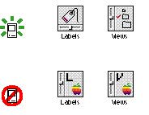

|
Avoid Text in IconsAvoid using text in your icons whenever possible. Text in icons can be confusing, and it's not localizable to other regions, languages, or countries. It's appropriate to label icons to help the user recognize them and so that they can be read to a person with a visual disability. When you ship your product, every icon should have a name, but people can change the name of an icon at any time. Figure 8-11 shows an example of icons with text in them and icons that convey the idea much better without text.Figure 8-11 Avoid text in icons  |